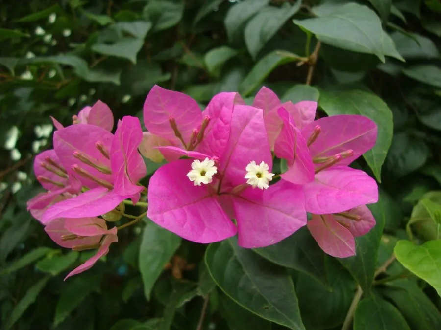

灌木与花木 · 植物界
三角梅 Bougainvillea spectabilis

热带亚热带常见的攀援灌木，色彩鲜艳的“花瓣”其实是苞片，花期长、易栽培，是南方城市与庭院的常见景观植物。
- 分类
- 门被子植物门纲木兰纲目石竹目科紫茉莉科属叶子花属
- 栖息环境
- 海拔 800 米以下的热带亚热带地区，喜高温、光照充足，耐旱
- 地理分布
- 原产南美洲巴西、秘鲁等地，中国广东、广西、福建、海南等地广泛栽培
- 保护级别
- 暂无评估；中国未列入国家重点保护野生植物名录
物种志
三角梅为常绿攀援灌木，茎粗壮，枝条常拱形下垂，具腋生刺；叶片互生，卵形至椭圆形，全缘。花期长，在温暖地区几乎全年开花，花小、黄绿色，三朵聚生于三枚色彩鲜艳的苞片中，苞片呈紫红、粉、橙、白等色，形似花瓣，是主要的观赏部位；果实为瘦果，少见结实。
三角梅原产南美洲巴西、秘鲁等地，中国广东、广西、福建、海南、云南等地广泛栽培，喜高温、光照充足，耐旱、耐修剪，适宜疏松肥沃、排水良好的土壤。因花期长、花色艳丽、适应性强，常被用于阳台、围墙、天桥与公园的立体绿化，也是南方城市常见的市花；厦门、深圳、珠海等城市均以三角梅为市花或重要景观植物。三角梅的苞片色彩来自细胞中的色素，日照越充足、开花越繁盛。
形态与习性
- 株高藤蔓可达 10 m，枝条拱形下垂
- 花期全年可开，盛花期 10 月至翌年 5 月
- 果期少见结实，瘦果细小
- 光照喜光，光照越足开花越盛
- 水分耐旱，怕积水
- 土壤疏松肥沃、排水良好的壤土
- 主要用途阳台与围墙绿化、市花景观、盆栽造型
趣味知识
- 三角梅色彩鲜艳的部分其实是苞片，真正的花很小，藏在苞片中间。
- 三角梅光照越充足开花越繁盛，光照不足时枝条徒长、开花稀少。
- 厦门、深圳、珠海等南方城市把三角梅作为市花或重要景观植物。
- 三角梅原产南美，因花期长、易栽培，成为热带城市最常见的绿植之一。